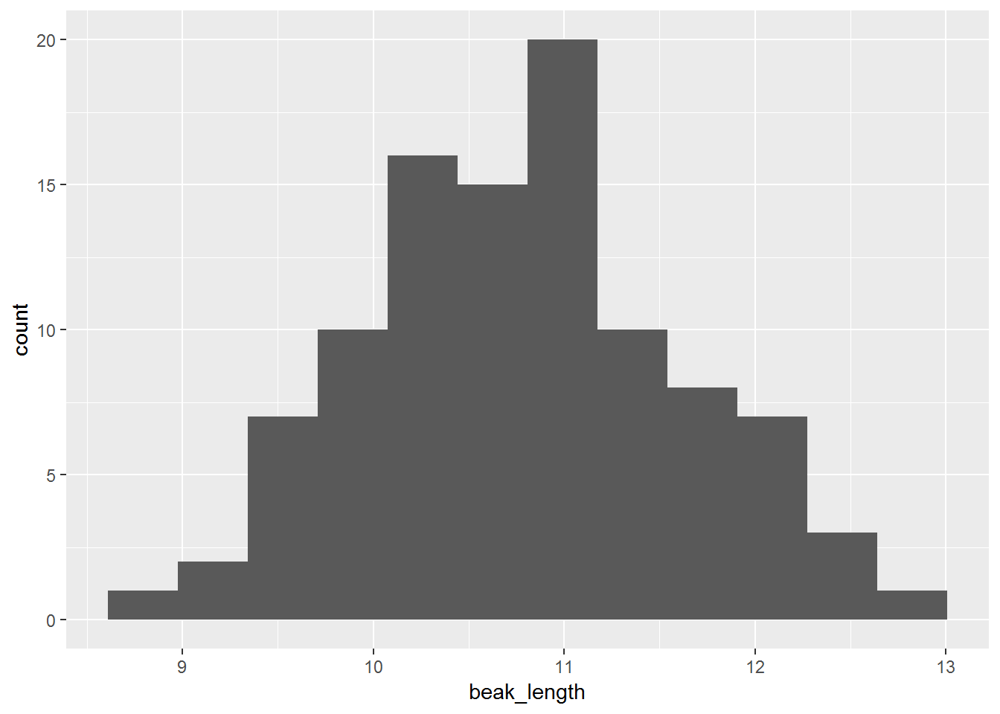
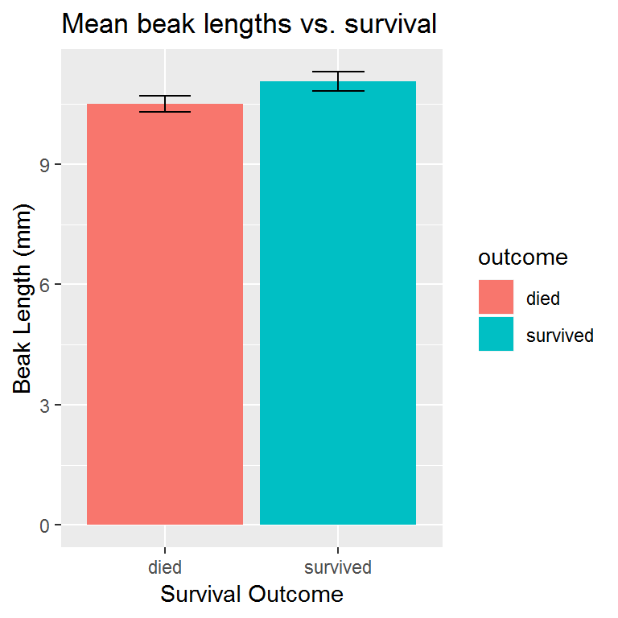

3. Finches dataset
In Part 3 of this lab, you will be introduced to R scripts. You will use the Finches dataset to learn how to read a tabular dataset into R, inspect it, and perform basic statistical summaries on it. You will estimate means, standard deviations, standard errors of the mean, and confidence intervals around the mean. You will also learn how to plot histograms and barplots.
Dowload the data
Download the data and save it in the project directory (folder). For example, if you created your Lab 1 project in the **H:** directory, then save the data file to H:\Lab 1.
[what if it doesn’t give you an option for where to download the data?]
Reading data into R
This requires installing some packages in R, which let you use functions not found in the standard R installation.
To download package, click the Package tab to the right and click Install. Type the name of the package, tidyverse, and click Install. You only have to do this once on each computer you are using.
Now you’re ready to load the packages.
library(readxl) # load readxl, for reading Excel files
library(tidyverse) # load tidyverse, for working with datasets## Warning: package 'tidyverse' was built under R version 3.5.1## -- Attaching packages ------------------------------------------ tidyverse 1.2.1 --## v ggplot2 2.2.1.9000 v purrr 0.2.5
## v tibble 1.4.2 v dplyr 0.7.5
## v tidyr 0.8.1 v stringr 1.3.1
## v readr 1.1.1 v forcats 0.3.0## -- Conflicts --------------------------------------------- tidyverse_conflicts() --
## x dplyr::filter() masks stats::filter()
## x dplyr::lag() masks stats::lag()You will see a warning and some messages when you run this code, but those can be safely ignored for now.
Read the data.
## # A tibble: 100 x 12
## band species sex first_adult_year last_year outcome weight wing
## <dbl> <chr> <chr> <dbl> <dbl> <chr> <dbl> <dbl>
## 1 9 Geospiza f~ unkn~ 1975 1977 died 14.5 67
## 2 12 Geospiza f~ fema~ 1975 1977 died 13.5 66
## 3 276 Geospiza f~ unkn~ 1976 1977 died 16.4 64.2
## 4 278 Geospiza f~ unkn~ 1976 1977 died 18.5 67.2
## 5 283 Geospiza f~ male 1976 1977 died 17.4 70.2
## 6 288 Geospiza f~ unkn~ 1976 1977 died 16.3 71.2
## 7 293 Geospiza f~ unkn~ 1976 1977 died 15.7 67.2
## 8 294 Geospiza f~ unkn~ 1976 1977 died 16.8 68.2
## 9 298 Geospiza f~ male 1976 1977 died 15.5 68.2
## 10 307 Geospiza f~ male 1975 1977 died 17.5 70
## # ... with 90 more rows, and 4 more variables: tarsus <dbl>,
## # beak_length <dbl>, beak_depth <dbl>, beak_width <dbl>Explain what they are seeing
Show ways to view the data:
## Observations: 100
## Variables: 12
## $ band <dbl> 9, 12, 276, 278, 283, 288, 293, 294, 298, 307...
## $ species <chr> "Geospiza fortis", "Geospiza fortis", "Geospi...
## $ sex <chr> "unknown", "female", "unknown", "unknown", "m...
## $ first_adult_year <dbl> 1975, 1975, 1976, 1976, 1976, 1976, 1976, 197...
## $ last_year <dbl> 1977, 1977, 1977, 1977, 1977, 1977, 1977, 197...
## $ outcome <chr> "died", "died", "died", "died", "died", "died...
## $ weight <dbl> 14.50, 13.50, 16.44, 18.54, 17.44, 16.34, 15....
## $ wing <dbl> 67.00, 66.00, 64.19, 67.19, 70.19, 71.19, 67....
## $ tarsus <dbl> 18.00, 18.30, 18.47, 19.27, 19.27, 20.27, 17....
## $ beak_length <dbl> 9.20, 9.50, 9.93, 11.13, 12.13, 10.63, 9.93, ...
## $ beak_depth <dbl> 8.3, 7.5, 8.0, 10.6, 11.2, 9.1, 9.5, 10.5, 8....
## $ beak_width <dbl> 8.1, 7.5, 7.6, 9.4, 9.5, 8.8, 8.9, 9.1, 8.2, ...Plotting a histogram
Plotting is most easily accomplished using the ggplot() function and its associated helper functions.
For example, to plot a histogram of the beak_length variable, use the following code. In this example, you will set the x axis to beak_length and setting the number of bins to use for the histogram to 12.
 You can plot histograms of other columns by changing the x = part of the code.
You can also experiment with different numbers of bins. The goal is to have enough that you can see a hump-shaped distribution, but not so many that you have too many bins with few or no observations. Try plotting a histogram with 50 bins, and another with 3 bins. Not very informational, are they?
Sometimes we want to plot separate histograms for differet subsets of the data. One easy way to do this is with the facet_wrap() function in ggplot. Note that you have to add a + operator after the geom_histogram() line.
ggplot(
data = finches,
mapping = aes(x = beak_length, color = outcome)
) +
geom_histogram(bins = 14) +
facet_wrap(~ outcome, ncol = 1)
The last thing you might want to do is spruce up your plot with a title and better axis labels. This is done with the labs() function:
ggplot(
data = finches,
mapping = aes(x = beak_length, fill = outcome)
) +
geom_histogram(bins = 14) +
facet_wrap(~ outcome, ncol = 1) +
labs(
x = "Beak Length (mm)",
y = "Number of Birds",
title = "Beak Length and Survival",
subtitle = "Among medium ground finch (Geospiza fortis) survival on Daphne Major",
caption = "Data source: HHMI Lab Evolution in Action: Data Analysis")
Export your figure
To use your figure in a Microsoft Word document, PowerPoint presentation, or other software, you first need to save the image. The most reproducible way to do so is to use the ggsave() function.
By default, ggsave() will save the last plot displayed, so make sure the plot you want to save is displayed in the Plots tab in the bottom right panel before running this code.
Summarizing datasets
Scientists often want a quick summary of a dataset. The summary() function provides just that, and is especially useful for seeing summary statistics of numerical variables. Running this function prints a summary to the console, with the minimum value, median value, mean, maximum value, and first and third quartiles given for each numerical variable:
## band species sex first_adult_year
## Min. : 9.0 Length:100 Length:100 Min. :1973
## 1st Qu.: 421.5 Class :character Class :character 1st Qu.:1975
## Median : 613.5 Mode :character Mode :character Median :1975
## Mean :1174.0 Mean :1975
## 3rd Qu.:1588.2 3rd Qu.:1976
## Max. :8191.0 Max. :1976
## last_year outcome weight wing
## Min. :1977 Length:100 Min. :13.00 Min. :64.00
## 1st Qu.:1977 Class :character 1st Qu.:15.00 1st Qu.:67.00
## Median :1978 Mode :character Median :16.24 Median :68.19
## Mean :1978 Mean :16.35 Mean :68.54
## 3rd Qu.:1978 3rd Qu.:17.44 3rd Qu.:70.25
## Max. :1982 Max. :21.24 Max. :74.01
## tarsus beak_length beak_depth beak_width
## Min. :17.05 Min. : 8.70 Min. : 7.500 Min. : 7.400
## 1st Qu.:18.49 1st Qu.:10.20 1st Qu.: 8.795 1st Qu.: 8.200
## Median :19.13 Median :10.80 Median : 9.305 Median : 8.600
## Mean :19.19 Mean :10.79 Mean : 9.392 Mean : 8.641
## 3rd Qu.:20.00 3rd Qu.:11.25 3rd Qu.:10.100 3rd Qu.: 9.055
## Max. :21.06 Max. :12.73 Max. :11.210 Max. :10.070If we want to do anything more than, then we need to use functions provided in the tidyverse to summarize the data. The following code will summarize a dataset by calculating the mean, standard deviation, standard error of the mean (SEM), and 95% confidence intervals of the beak_length variable.
summary <- finches %>%
summarize(mean = mean(beak_length),
sd = sd(beak_length),
n = n()) %>%
mutate(sem = sd / sqrt(n),
upper = mean + 2 * sem,
lower = mean - 2 * sem)
summary## # A tibble: 1 x 6
## mean sd n sem upper lower
## <dbl> <dbl> <int> <dbl> <dbl> <dbl>
## 1 10.8 0.819 100 0.0819 11.0 10.6If we wanted to get separate summaries for different subsets of the data, we can add the group_by() function like this:
grouped_summary <- finches %>%
group_by(outcome) %>%
summarize(mean = mean(beak_length),
sd = sd(beak_length),
n = n()) %>%
mutate(sem = sd / sqrt(n),
upper = mean + 2 * sem,
lower = mean - 2 * sem)
grouped_summary## # A tibble: 2 x 7
## outcome mean sd n sem upper lower
## <chr> <dbl> <dbl> <int> <dbl> <dbl> <dbl>
## 1 died 10.5 0.698 50 0.0987 10.7 10.3
## 2 survived 11.1 0.840 50 0.119 11.3 10.8To plot these means and confidence intervals:
ggplot(
data = grouped_summary,
mapping = aes(x = outcome, y = mean, fill = outcome)
) +
geom_col() +
geom_errorbar(aes(ymin = lower, ymax = upper), width = .3) +
labs(
x = "Survival Outcome",
y = "Beak Length (mm)",
title = "Mean beak lengths vs. survival"
)
Export your figure
t-test
Plotting the means and confidence intervals of measurements in the two groups of birds is an important step in data analysis. To perform a more rigourous comparison, however, you may run a t-test to tell if the difference in means is likely due to chance (i.e. sampling error) or not.
The t-test function in R is a bit picky… it requires you to give it two arguments: a vector of measurements for one group and another vector of measurements for the other group. To do this, you must perform three steps:
- Create a vector of beak lengths for birds that died.
- Create a vector of beak lengths for birds that survived.
- Compare the two vectors using a t-test.
STEP 1: The following code will take a dataset, in this case finches, remove rows that do not meet a given criteria, and extract the column of interest as a vector, and store the result as a new object named beak_length_died.
beak_length_died <-
finches %>%
filter(outcome == "died") %>%
pull(beak_length)
beak_length_died # print the new object in the console## [1] 9.20 9.50 9.93 11.13 12.13 10.63 9.93 11.33 9.93 11.10 10.80
## [12] 9.70 10.60 9.60 10.50 9.90 9.60 10.70 9.30 10.10 9.70 11.00
## [23] 11.00 11.60 10.50 10.20 9.70 11.10 11.10 10.20 10.80 10.00 11.10
## [34] 10.30 11.10 10.50 11.00 10.00 10.30 11.70 10.20 10.90 11.90 10.20
## [45] 10.50 10.50 9.80 11.80 11.00 10.30STEP 2: Now copy that code and change “died” to “survived” in your object name, so beak_length_survived, and in the filter criteria, so outcome == "survived".
beak_length_survived <-
finches %>%
filter(outcome == "survived") %>%
pull(beak_length)
beak_length_survived## [1] 11.50 10.20 12.10 11.60 10.30 11.40 8.70 9.90 10.20 10.30 11.43
## [12] 11.93 11.03 10.63 10.83 11.23 11.23 10.23 11.63 12.23 11.03 11.13
## [23] 10.93 11.03 10.23 11.33 10.03 10.70 10.00 12.43 11.09 9.63 11.60
## [34] 11.30 12.13 12.03 10.63 11.83 12.43 12.73 10.33 11.03 12.53 12.13
## [45] 10.43 10.53 11.23 11.23 10.90 10.50STEP 3: Perform a t-test using the t.test() function:
##
## Welch Two Sample t-test
##
## data: beak_length_died and beak_length_survived
## t = -3.6335, df = 94.807, p-value = 0.0004539
## alternative hypothesis: true difference in means is not equal to 0
## 95 percent confidence interval:
## -0.8681443 -0.2546557
## sample estimates:
## mean of x mean of y
## 10.5122 11.0736The two numbers to focus on here are the p-value and the 95% confidence interval.
The p-value tells you what proportion of the time you would expect to find a difference in population like these two if they were in fact the same. Scientists generally use a cutoff (or alpha level) of 0.05 to determine if a difference is “statistically significant”. In this case, a p-value of 0.0004539 is much lower than 0.05, so we can reject our null hypothesis and accept our alternative hypothesis that the true difference in means is not equal to 0.
As further evidence that the difference between the means is not equal to zero, you can see that the 95% confidence interval does not include zero.
To report the findings of a t-test, you say [ALISON WHAT DID YOU TELL THEM?]
[add link to a SEM explainer]
When you’re ready, you can move on to Part 4.